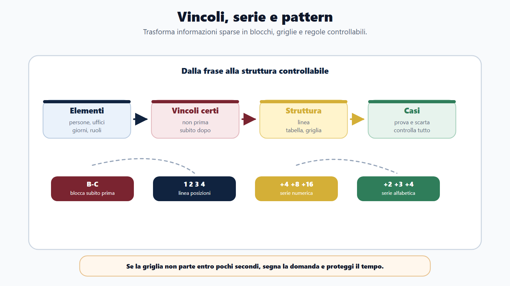
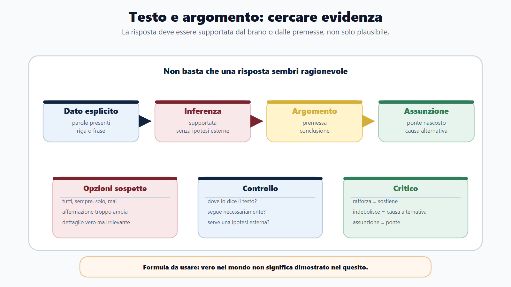
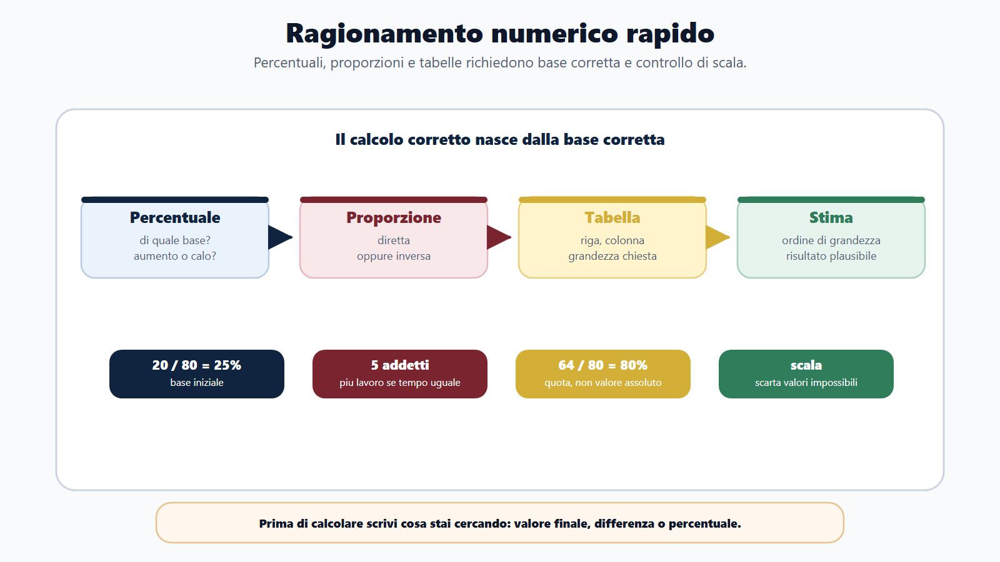
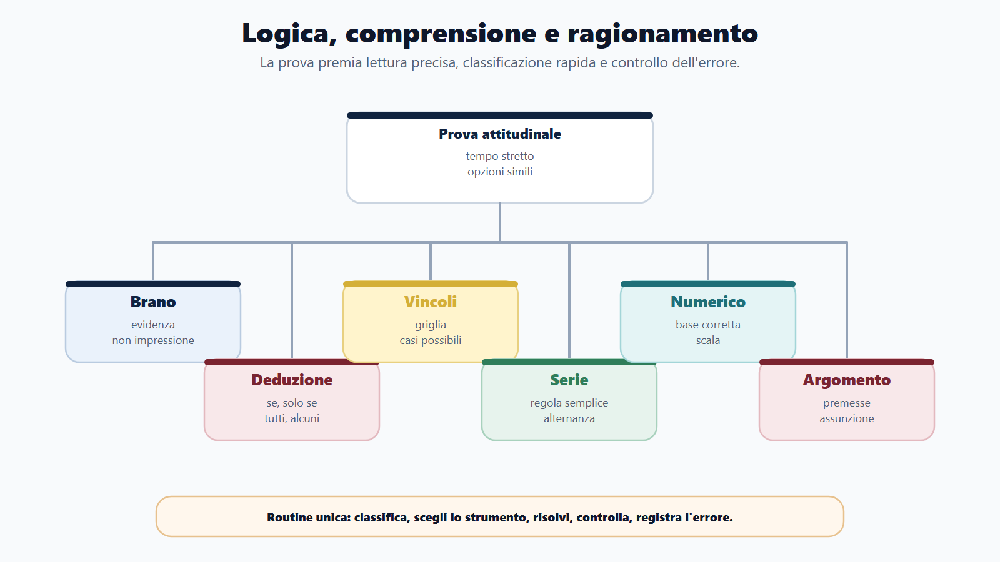
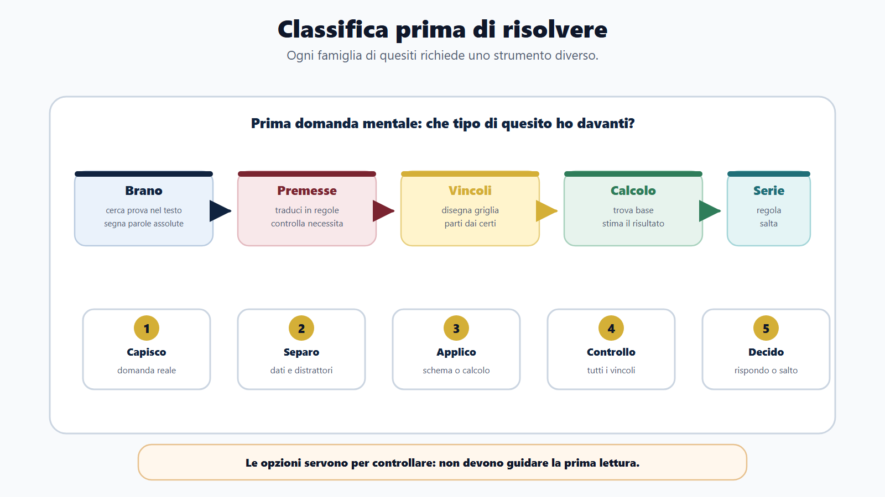
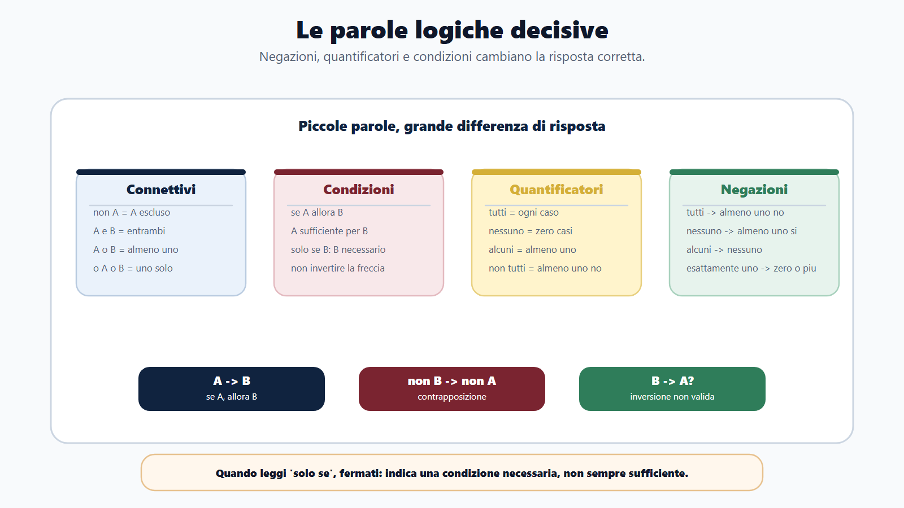

VOL-01 · Capitolo 12
Parte II · Materie comuni
Logica, comprensione
del testo e ragionamento
Una palestra, non un trattato: classificare il quesito, scegliere lo strumento, non regalare punti.
Schema
Vincoli serie pattern

Schema
Testo argomento evidenza

Schema
Ragionamento numerico rapido

Schema
Mappa logica comprensione ragionamento

Schema
Classifica prima di risolvere

Schema
Parole logiche decisive

01 · Perché decide
Poche righe, tempo stretto, opzioni simili
In diritto puoi recuperare con la memoria. Qui un “non”, un “solo se”, un “alcuni” o una percentuale letta male spostano la risposta. Le etichette dei bandi cambiano; il lavoro no: capire la domanda prima di cercare la risposta.
Regola madre
Classifica il quesito prima di risolverlo. Brano, deduzione, vincolo, calcolo, serie, argomento: ognuno ha il suo strumento.
02 · BANDO su questo capitolo
Come usarlo in preparazione
Logica, ragionamento, attitudinale, comprensione, deduttivo, critico, numerico.
Verbale, numerica, deduttiva, critica, comprensione.
Connettivi, quantificatori, percentuali, proporzioni, brani, vincoli.
Lettura, logica, calcolo, tempo, distrazione, opzione trappola.
Schemi, griglie, soluzioni spiegate, simulazioni a tempo.
03 · Classifica
Prima lo strumento, poi le opzioni
Brano
Evidenza testuale. Idea, titolo, “si deduce”, coerente o non deducibile.
Deduzione / sillogismo
Premesse, “se”, “tutti”, “alcuni”. Regole e insiemi, non il buon senso.
Vincolo / serie
Griglia, linea, blocco. Nelle serie cerca la regola più semplice.
Numerico
Percentuali, proporzioni, tabelle. Prima la base, poi il calcolo.
Critico
Premessa, conclusione, assunzione. Rafforza o indebolisce l’argomento.
Errore tipico
Leggere le opzioni prima della domanda. Sono costruite per attirare.
04 · Parole decisive
Connettivi, condizioni, quantificatori
Se / solo se
“Se A allora B” non si inverte. “Solo se” rende B necessario, non sufficiente. Sufficiente basta; necessario deve esserci, da solo non basta.
Tutti / alcuni / nessuno
Negazione di “tutti”: almeno uno non. “Non tutti” non è “nessuno”. “Alcuni”: almeno uno, non per forza tutti.
Se una domanda è protocollata, ha un numero. Non segue che ogni numero identifichi una domanda protocollata.
05 · Vincoli
Trasforma le frasi in struttura
Quattro candidati, quattro turni. Anna non è prima. Bruno è subito prima di Carla. Davide dopo Anna. “Subito prima” è un blocco: B–C.
Casi 3–4 e 2–3
Anna non può essere prima e Davide deve seguirla. Quei due casi cadono.
Resta 1–2
Bruno, Carla, poi Anna e Davide. Ordine: Bruno, Carla, Anna, Davide.
Sillogismi
La conclusione deve essere obbligata dalle premesse. Se serve un’informazione in più, non è necessaria.
06 · Comprensione
Non tradurre: prova
Cinque mosse
Leggi la domanda. Cerca soggetti, date, negazioni. Decidi se chiede dato, sintesi o inferenza. Elimina opzioni assolute o non supportate. Scegli quella che richiede meno ipotesi.
Mini-brano
Prenotazione online non obbligatoria per le urgenze documentate; resta lo sportello e un numero telefonico. “Tutti devono prenotare” è troppo assoluta. Coerente: le urgenze possono essere gestite senza prenotazione.
07 · Critico e numerico
Argomento e base del calcolo
Premessa, conclusione, assunzione
Dopo la semplificazione del modulo aumentano le domande online. Assunzione: non c’è un’altra causa. Indebolisce: nello stesso periodo la presentazione online è diventata obbligatoria.
Percentuale di che cosa?
15% di 800 assenti → 680 presenti. Da 80 a 100 l’aumento è 25% sulla base 80, non 20%. In tabella conta la percentuale, non il valore assoluto più alto.
08 · Tempo ed esclusione
Tre giri, soglie di abbandono
Serie
30–45 secondi. Se la regola non compare, segna e passa. Una serie non deve rovinare cinque domande facili.
Vincolo
90–120 secondi. Se la griglia non parte entro 40 secondi, salta. Inserisci prima i vincoli certi.
Esclusione
Contraddice un dato, troppo forte, fuori scala, relazione invertita. Tra le rimaste, quella che soddisfa tutti i vincoli.
Primo giro: riconoscibili. Secondo: schema o calcolo. Terzo: domande segnate.
09 · Diario
Giusta o sbagliata non basta
Categorie
Lettura: ignorata una negazione. Condizionale invertito. Quantificatore. Testo plausibile ma non dimostrato. Calcolo sulla base sbagliata. Vincolo a mente. Tempo. Distrazione.
Un bersaglio a settimana
Cerchia non, mai, solo, salvo. Scrivi A → B. Traduci “non tutti” in “almeno uno non”. Chiediti: dove lo dice il brano?
10 · Verifica
Commissario e trappola
Come affronta la prova?
Distingue le famiglie. Nei brani cerca evidenza. Nelle deduzioni traduce le premesse. Nei calcoli individua la base e controlla la plausibilità. Tempo a più giri. Errori per categoria.
Plausibile non è corretto
La risposta deve essere supportata da premesse o testo. Una conclusione può essere ragionevole nella vita e non necessaria nel quesito. “Non deducibile” è spesso plausibile ma non dimostrata.
11 · Mini-esercizio
Che cosa segue necessariamente?
Tutte le domande complete sono protocollate. Alcune domande online sono complete. Nessuna protocollata è esclusa per mancanza di firma.
Corretta: B
Alcune domande online sono complete; tutte le complete sono protocollate; quindi alcune online sono protocollate.
Perché cadono le altre
A estende “alcune” a “tutte”. C aggiunge un’esclusione non dimostrata. D inverte la prima premessa.
12 · Serie e proporzioni
Regola semplice, base corretta
4, 7, 10, 13
+3 → 16. Prima le differenze, poi due serie intrecciate, poi costruzioni complesse.
Proporzione diretta
3 operatori, 180 domande in 2 ore → 5 operatori, 300. Se gli addetti raddoppiano sullo stesso lavoro, il tempo dimezza.
Tabella
90/120 = 75%, 105/150 = 70%, 64/80 = 80%. Vince C, non chi ha più domande complete in valore assoluto.
13 · Da sapere in cinque righe
Cinque regole di lavoro
1. Classifica il quesito prima di risolverlo: brano, deduzione, vincolo, calcolo, serie, argomento.
2. Traduci “se”, “solo se”, “tutti”, “alcuni”, “nessuno” prima di guardare le opzioni.
3. Nei brani la risposta sta nel testo; plausibile non è dimostrato.
4. Nei calcoli identifica sempre la base; nelle tabelle non confondere assoluto e percentuale.
5. Salta quando il tempo non rende più: tre giri proteggono il punteggio complessivo.
Prossimo capitolo
Metodo di studio per concorsi
Dalla palestra dei quesiti alla settimana governata: bando, nuclei, richiamo, diario, output.